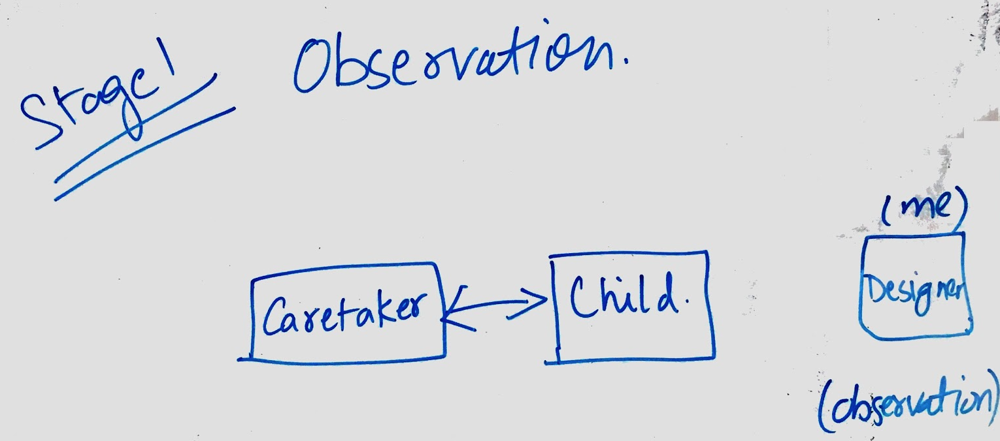
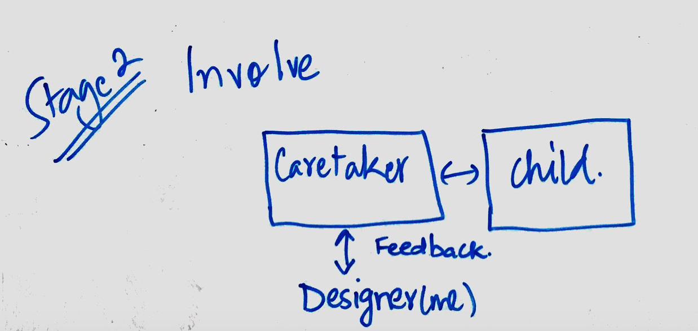
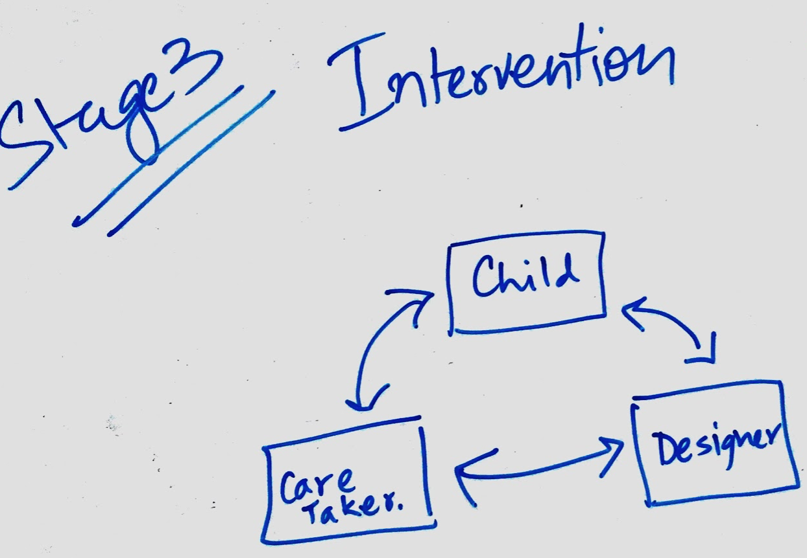
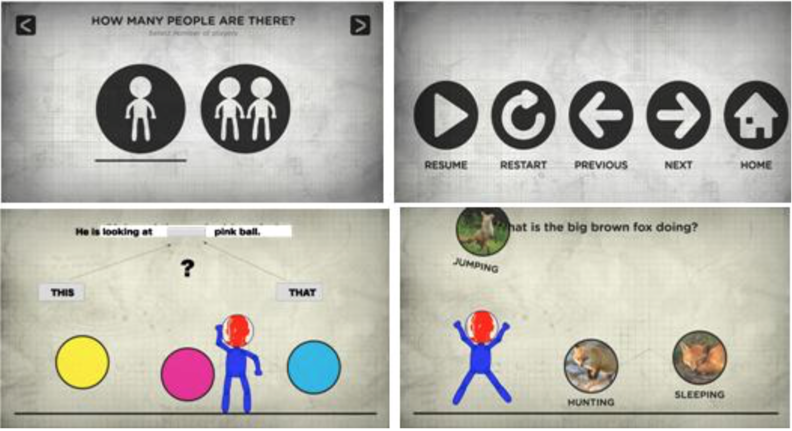

Design Interfaces for Autism
I, along with my fellow groups at Chalopadho designed software to be used in Tamana Autism Centre School of Hope, Delhi to enhance learning process during the computer sessions of autistic learners in the school. We gathered feedback from teachers and care-takers in the school to refine our product. The reaction of all users determined how successful we were in designing programs in such a challenging environments.
Problem
The computer classes of students at Tamana Autism Centre not at all involved computer software of any kind. No graphical interface was present and the techniques, while considered to be effective, were no better than paper-based exercises and activities. The maximum available tools were Microsoft word and paint tool. To enhance the learning process, a better product needed to be designed.
Requirements
Since the goal is to enhance learning experience and engagement of autistic kids who are prone to mood swings and frustration, some factors needed to be kept in mind -
- Design should be simple.
- Nature of Interaction would be based on "Play".
- It is customizable as per needs of teachers and curriculum developers.
Process
Our design process involves three stages :
OBSERVATION
This is the first stage of the process in which designer (me) acted as an observer. In this stage I had to observe as a third person the interaction between caretaker and child and take notes accordingly.
INVOLVING
This is the second stage in which I stepped in but in an incomplete way. This was mainly in order to take feedback from care-taker without disturbing the caretaker-child interaction. The feedback from the caretaker was taken afterwards.
Third stage - Intervention
This is the final stage in which I had to step in and get actively involved in the participation among caretaker and child.
Research and Feedback
We tried to design software that had consistent and limited options. Limitations were learnt from the routinely observation and interaction with the care takers and the children which gave us insights about more generic HCI paradigms for autistic people. Primary design issues were identified:
Final Design
Based on the research, various prototypes were developed and a new learning game was designed for teachers and students. Screenshots are given as follows -
At the opening of the application, the users select their avatar which takes their image(as shown in Fig above) and adds that to red face as shown. Once the avatar is selected, the user selects number of players (single-player/multiplayer). Child has to select the appropriate option my dragging towards the desired blank. So this fill in the blank game can use the same content the teacher uses to teach kids on the black board.